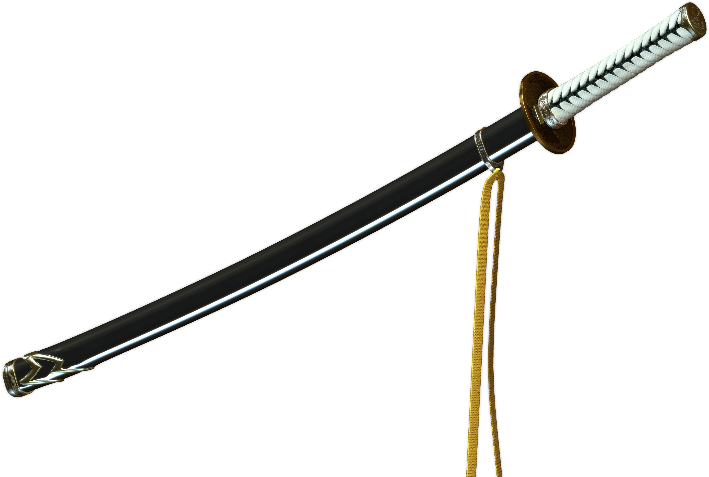
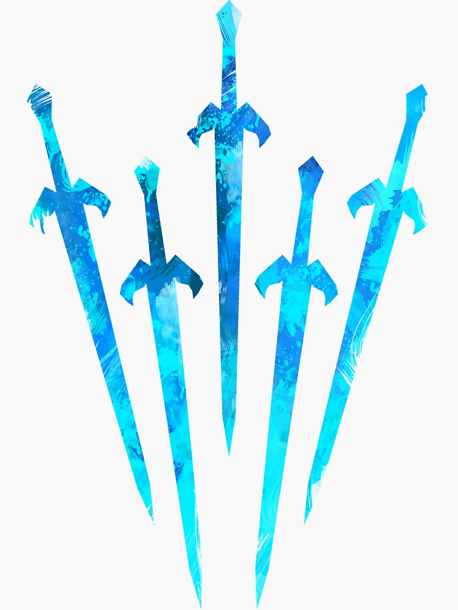

1. Opprinnelse og Tragedie
Sønnen av Sparda
Vergil er den eldre av de to tvillingbrødrene, født av den legendariske demonen Sparda og den menneskelige kvinnen Eva. Til forskjell fra Dante, som omfavnet sin menneskelighet, har Vergil alltid sett på sin menneskelige side som en kilde til svakhet. Denne dualiteten er sentral i hans karakter.
Trauma og Motivasjon
Da de var unge, ble familien deres angrepet av demoner, noe som førte til Evas død. Vergil ble skilt fra Dante og ble overlatt til å overleve alene. Dette traumet formet hans filosofi: Makt er det eneste som betyr noe. Han søker å oppnå fullstendig demonisk kraft for å aldri føle seg svak eller sårbar igjen. Dette står i direkte kontrast til Dantes ønske om å beskytte det menneskelige riket.
2. Splittelse og Gjenfødsel (DMC5)
Etter å ha lidd store nederlag i tidligere spill, og svekket av demonisk korrupsjon (Nelo Angelo), tar Vergil en drastisk handling i **Devil May Cry 5** for å gjenvinne sin fulle styrke:
- Urizen: Ved å bruke sverdet Yamato, kutter Vergil seg løs fra sin menneskelighet, og skaper **Urizen, Demonkongen**. Urizen er den rene demoniske manifestasjonen av Vergils ønske om makt, blottet for følelser eller moral. Hans eneste formål er å sluke frukten fra Qliphoth-treet.
- V: Den frakoblede menneskelige delen av Vergil tar form som **V**, en sårbar mann som trenger demoniske underordnede for å kjempe. V representerer Vergil's sjel, hans minner, og de resterende menneskelige følelsene han avviste.
- Gjenforeningen: V oppsøker Urizen, og de to smelter sammen igjen, og skaper den fullt restaurerte og ultimate formen for Vergil, nå med tilgang til **Sin Devil Trigger** (SDT) – den sanne demonformen til en Sønn av Sparda.
3. Detaljert Våpenanalyse
Yamato
Hovedvåpenet, fokus på presisjon og dimensionell kontroll.
Yamato er en O-katana (lang japansk sverd) med makten til å kutte gjennom tid og rom. Dette er kilden til Vergils evne til å teleportere (Air Trick) og utføre Judgement Cut, som lager sfæriske dimensjonelle kutt. I DMC5 er det Yamato som brukes til å splitte Vergils demon og menneskedeler fra hverandre, noe som bekrefter dens unike evne til å manipulere dualiteten i hans essens. Den representerer Vergils demoniske arv og urokkelige vilje.
Beowulf
Kraftvåpen, fokus på rå, ladbar nærkamp.

Beowulf er et par hansker og leggskinner gjennomsyret av ren, hellig lysenergi. Ironisk nok bruker demonen Vergil dette våpenet som ble etterlatt av den demoniske (men lysbaserte) fienden Beowulf fra DMC3. Våpenet er rent basert på rå, upakket kraft. Mange angrep kan lades, som Rising Dragon og Blitz, og de leverer massiv Burst Damage (øyeblikkelig skade). De er essensielle for komboer som krever store, raske skadeutbytter.
Force Edge/Mirage Edge
Dantes arv, fokus på standard, aggressive angrep.

Dette var Spardas sverd før det ble til Devil Sword Sparda. Det er et solid, om enn uoppgradert, demonsverd. Vergil bruker det på en måte som minner om Dantes bevegelsessett (f.eks. Stinger), og det symboliserer Vergil's tidligere forsøk på å etterligne (og overgå) Dante. Det er et allsidig, men mindre spesialisert, våpen sammenlignet med Yamato.
Summoned Swords
Prosjektiler, fokus på Concentration og press på avstand.
Manifestasjoner av ren demonisk energi og Vergils vilje. Disse er hans primære avstandsvåpen. De er avgjørende for å opprettholde Concentration-måleren (Vergils unike ressurs), da de lar ham angripe fiender trygt fra avstand uten å miste flyt. De ulike formene (Spiral Swords, Heavy Rain) gir allsidige kontroll- og skadealternativer.